Leveling 1-60
Tap a level to open it. Check it off and it collapses. Levels 1-30 match the beta; 31-60 is mostly unannounced.
- New Auto Shot
- New Raptor Strike
- New Track Beasts
- Start in Coldridge Valley, Dun Morogh. Melee with Raptor Strike until you have a bow and arrows, then stay at range. [WoW Forever DB]
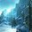
Zone: Coldridge Valley / Dun Morogh (general Alliance path; Forever quest XP may differ)- Spend mana on Serpent Sting before
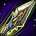
Arcane Shot: Auto Shot does most of the work. [WoW Forever DB]
- New Arcane Shot
- New Hunter's Mark
- New Concussive Shot
- R2 Raptor Strike
- New Aspect of the Hawk
- New Call Pet
- New Dismiss Pet
- New Feed Pet
- New Revive Pet
- New Tame Beast
- New
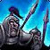
Track Humanoids - R2 Serpent Sting
- Taming quest: Grif Wildheart in Kharanos (Large Crag Boar, Snow Leopard, Ice Claw Bear), then Belia Thundergranite in Ironforge. [WoW Forever DB]
- You can only tame beasts at or below your level. Head to Loch Modan; a Loch Modan bear is the easy tank pet. [WoW Forever DB]
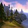
Zone: Loch Modan / Westfall (general Alliance path; Forever quest XP may differ)- New Distracting Shot
- New Mend Pet
- New Wing Clip
- R2 Arcane Shot
- Hall of Thanes (new, under Ironforge): Calibrated Blunderbuss (gun) from Old Ironforge Incursion at 16. [WoW Forever DB]
- New Aimed Shot
- New Aspect of the Cheetah
- New Disengage
- New Freezing Trap
- New Deterrence Talent Spell
- R3 Arcane Shot
- R2 Distracting Shot
- R2 Mend Pet
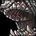
Intimidation)- Aimed Shot, Freezing Trap, Disengage, Aspect of the Cheetah. No mount until 40, so Cheetah out of combat. [WoW Forever DB]
- Vyrin's Revenge: Hunting Quiver or Ammo Sack (+10% ranged attack speed). [WoW Forever DB]
- Route: Redridge, then Wetlands, Duskwood and Ashenvale. [WoW Forever DB]
- New
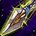
Scorpid Sting - R2 Hunter's Mark
- New Counterattack Talent Spell
- New Summon Hawk New in Forever Talent Spell
- New
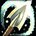
Trueshot Aura Talent Spell
- Summon Hawk (16th BM point). Keep two hawks up; it shares a cooldown with Arcane Shot. [WoW Forever DB]
- New Frost Trap
- R4 Arcane Shot
- R3 Aspect of the Hawk
- R3 Mend Pet
- R2 Aimed Shot
- New
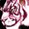
Aspect of the Beast - New Feign Death
- New
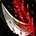
Lacerate New in Forever - New Intimidation Talent Spell
- New
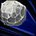
Scatter Shot Talent Spell - New
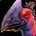
Strider Kick New in Forever Talent Spell - R3 Distracting Shot
- R2 Scare Beast
- R2 Mongoose Bite
- R2 Counterattack Needs Talent
- Beta cap. Feign Death and Intimidation. Greater Friend of the Library (about 30 books) gives Truthseeker's Bow. [WoW Forever DB]
- New Flare
- New
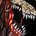
Track Demons - R5 Raptor Strike
- R2 Trueshot Aura Needs Talent
- New Explosive Trap
- R5 Serpent Sting
- R2 Disengage
- New Viper Sting
- R5 Arcane Shot
- R4 Mend Pet
- R3 Immolation Trap
- R3 Aimed Shot
- R2 Summon Hawk New in Forever Needs Talent
- New Aspect of the Pack
- New
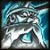
Track Giants - New
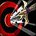
Volley - New Bestial Wrath Talent Spell
- New
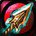
Sniper Shot New in Forever Talent Spell - R6 Raptor Strike
- R3 Hunter's Mark
- R4 Distracting Shot
- R2 Freezing Trap
- R3 Trueshot Aura Needs Talent
- R2 Aspect of the Beast
- R2 Lacerate New in Forever
- Dual Specialization opens (class trainer in a capital; Blizzard deep dive). Cost not published. Add Marksmanship as your second spec (Alt: Marksmanship tab).
- Bestial Wrath, mail armor and your first mount. [WoW Forever DB]
- R6 Serpent Sting
- R3 Counterattack Needs Talent
- R6 Arcane Shot
- R5 Mend Pet
- R3 Mongoose Bite
- R4 Aimed Shot
- R2 Explosive Trap
- R7 Raptor Strike
- R5 Aspect of the Hawk
- R3 Disengage
- R3 Summon Hawk New in Forever Needs Talent
- R2 Sniper Shot New in Forever Needs Talent
- New Track Dragonkin
- R7 Serpent Sting
- R5 Distracting Shot
- R4 Trueshot Aura Needs Talent
- R3 Aspect of the Beast
- R3 Lacerate New in Forever
- R2 Volley
- Ogtinc in Azshara: The Hunter's Charm chain to The Green Drake (Sunken Temple). In quest data, not reachable in beta. [WoW Forever DB]
- R7 Arcane Shot
- R6 Mend Pet
- R5 Aimed Shot
- R4 Counterattack Needs Talent
- R3 Explosive Trap
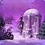
Zone: Winterspring / Silithus (general Alliance path; Forever quest XP may differ)- R8 Serpent Sting
- R4 Hunter's Mark
- R6 Aspect of the Hawk
- R4 Mongoose Bite
- R3 Sniper Shot New in Forever Needs Talent
- R3 Volley
- New
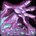
Tranquilizing Shot - R9 Serpent Sting
- R8 Arcane Shot
- R7 Aspect of the Hawk
- R6 Distracting Shot
- R7 Mend Pet
- R3 Wing Clip
- R6 Aimed Shot
- R3 Freezing Trap
- R4 Summon Hawk New in Forever Needs Talent
- R5 Trueshot Aura Needs Talent
- R4 Aspect of the Beast
- R4 Lacerate New in Forever
- Max level. Tranquilizing Shot. Rhok'delar chain is in the quest data. Endgame gear/talents not published yet.
Alt Spec: Marksmanship
Your main spec is Beast Mastery. This tab is your Marksmanship dual spec (opens at 40, class trainer in a capital; Blizzard deep dive). WoW Forever DB suggests Marksmanship at 40 for dungeon runs.
Marksmanship Leveling Order 10-60
Order: WoW Forever DB Marksmanship leveling. The source calls it unconfirmed past the opening; nobody can test past 30.
Rotation
- Hunter's Mark, Serpent Sting, then Aimed Shot and Auto Shot. Arcane Shot when mana allows.
- Keep Aspect of the Hawk up so Deadly Aspects procs.
- Trueshot Aura (talent at 34 in this order) buffs the party's ranged attack power for 30 min.
- Explosive Trap (34) and Volley (40) for packs.
New Marksmanship Talents in Forever
- Careful Aim: Intellect adds attack power, up to 100% of it at 5/5.
- Rapid Killing: shorter Rapid Fire, and +20% on your next shot after a kill.
- Improved Stings: up to +20% Serpent Sting damage.
- Trueshot Aura now also affects raid members (build 70425).
Gear & Stats
Stat Priority (WoW Forever DB, BM Leveling)
- Ranged weapon damage
- Agility
- Crit
- Hit
- Intellect (about as good as Agility once Careful Aim is 5/5)
Your pet inherits your crit and attack power. Stamina and Strength do nothing for you. Carry a quiver or ammo pouch.
Weapon
- 5-11: new quest bows, e.g. Militia Bow (Alliance, 7), Junior's Hunting Bow (10).
- 12-18: Skorn's Rifle, Harvester's Pestslayer (15), Daryl's Hunting Bow or Rifle (16).
- 16: Calibrated Blunderbuss, Hall of Thanes.
- 20-30: Privateer Musket, Owlsight Rifle (20), Bow of Plunder (28), Lunaris Bow (30).
- 30: Truthseeker's Bow (library quest), or Golemsight Long Gun from Excavation Site: Wetlands.
Dwarf Hunter Start
- Coldridge Valley, then Dun Morogh, Loch Modan (10-18).
- Taming quest at 10 from Grif Wildheart in Kharanos.
WoW Forever DB. Dwarf racials: unconfirmed for Forever in these sources.
Professions
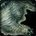
Skinning +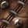
Leatherworking ✔WoW Forever DB calls them the natural Hunter pair. Engineering adds scopes and the Mechanical Dragonling.
Secondary
- Cooking: Well Fed buff food gives stats and +5% XP from kills in Forever. Cooking also makes Campfires.
- First Aid: bandages, and in Forever it can make healing potions. It also adds a Stamina First Aid Kit to Campfires.
WoW Forever DB (well-fed +5% kill XP)
Main Spec: Beast Mastery
Beast Mastery is your main spec. The 1-60 rows follow the order below. WoW Forever DB calls BM the fastest and safest Hunter leveling spec: the pet tanks, you shoot. 31-60 is untested theory.
Dual Spec
Level 40, from a class trainer in a capital city (Blizzard's deep dive). Price isn't published. That's how you'd add Marksmanship as a second spec.
1-60 Leveling Order (WoW Forever DB)
Order: WoW Forever DB Beast Mastery leveling (31/20/0), re-checked Oct 28. Solo, the source suggests Improved Revive Pet instead of Focused Fire. Levels 31-60 untested; beta cap is 30.
Pets
- Level 10 taming quest: Large Crag Boar, Snow Leopard, Ice Claw Bear (Grif Wildheart, Kharanos).
- For leveling, a Bear: it tanks well, and its Swipe (5 sec cooldown) hits several enemies.
- All families do the same base damage; each has its own ability.
- Pets learn higher ranks only from a tamed beast that knows them. Learning is permanent for that family.
- Bears and boars eat almost anything; cats, wolves and raptors only meat or fish. An unhappy pet does 25% less damage.
Icy Veins Forever BM leveling, WoW Forever DB pets, WoW Forever DB
Solo Priority
- Hunter's Mark, send the pet, Serpent Sting, Auto Shot.
- Aimed Shot on cooldown (20+).
- Summon Hawk on cooldown (25+); keep two hawks up. Arcane Shot only with spare mana.
- Intimidation (30) to stun or pull a mob off you.
- Bestial Wrath (40) on the hardest enemy of a pull.
Staying Alive Solo
- Stay out of the 8-yard dead zone; Raptor Strike and Wing Clip if a mob reaches you.
- Auto Shot needs you to stand still 0.5 sec before it fires.
- Disengage if you pull aggro. Feign Death (30) resets bad pulls; cancel it before 6 minutes.
- Buy ammo in bulk: one tester used 1,325 arrows in one Deadmines run.
Gear to Carry
My Bars · Lv
Change the level in the top bar. Gold outline = new at this level. Dashed = placement for 31-60 not confirmed.
Mark & Send Macro (From Lv 10)
#showtooltip Hunter's Mark /cast Hunter's Mark /petattack
Marks the target and sends the pet in one press (WoW Forever DB: mark, pet, sting, shoot). /petattack is standard WoW and wasn't checked against Forever.
Not on Bars
Tame Beast, Dismiss Pet, Beast Lore, Eagle Eye, Eyes of the Beast, Scare Beast, Distracting Shot, Flare, Scorpid Sting, Viper Sting, Volley, Aspect of the Wild, other Tracking. Drag them from your spellbook if you want them.
Learn levels from The Forever Era beta client data. Talent spells follow the BM order: Summon Hawk 25, Intimidation 30, Bestial Wrath 40. Middle 4 and Top 7 follow the spec toggle. Spells after 30 can't be tested in the beta.
Dungeons
35 dungeons, Lv 13-60. Level ranges from Icy Veins Forever. Alliance and shared ones shown; Ragefire Chasm (Horde) left out. ⚠️ = Wowhead says it couldn't test that dungeon in the beta and used Classic data.
Hunter Quiver (Lv 20) and Bow (Lv 30)
Vyrin's Revenge rewards a Hunting Quiver or Hunting Ammo Sack (+10% ranged attack speed). Greater Friend of the Library (about 30 books) rewards Truthseeker's Bow, the best ranged weapon at 30. Golemsight Long Gun from Excavation Site: Wetlands is the dungeon option.
Source: WoW Forever DB (beta). Stats may change by launch.
Hall of Thanes 13-20 New Shared
Where: Under Ironforge (Old Ironforge). Walk in from the city.
Quests to grab first
- Important Heirlooms · Thom Filch, Old Ironforge (32.6, 44.6)
- The Restless Dead · Afadra Dunwall, Old Ironforge (64.8, 58.4)
- Old Ironforge Incursion · Earthseer Farsen, Gol'Golar Quarry, Dun Morogh
- An Ancient Grudge · Ghostly Attendant, inside the dungeon
- The Treaty of Understanding · Vault item inside the dungeon
New Forever dungeon and the closest one to you.
Hunter loot: Not published for Forever yet.
Ruins of Lordaeron 15-22 New Horde-Side Quests
Where: Under the Undercity ruins, Tirisfal Glades. Far from Alliance land.
Quests to grab first
- Bloodied Insignia · General Marcus Jonathan, Stormwind
- Crest of Lordaeron · Inside the dungeon
Most quests are Horde-side. Wowhead lists the Alliance quest as 'tbd'.
Hunter loot: Not published for Forever yet.
Wailing Caverns 15-24 Shared
Where: The Barrens, north of the Crossroads. Long trip by boat from Menethil to Theramore, or via Auberdine to Darkshore and Ashenvale.
Quests to grab first
- Trouble at the Docks · Crane Operator Bigglefuzz, Ratchet (63, 37)
- Smart Drinks · Mebok Mizzyrix, Ratchet (62, 37), after Raptor Horns
- Deviate Hides · Nalpak, above the WC entrance (46, 35)
- Deviate Eradication · Ebru, above the WC entrance (46, 35)
- The Glowing Shard · Drops from Mutanus inside
Neutral quests only. Lord Serpentis drops the Journeyman Cooking campfire blueprint (Icy Veins camping).
Hunter loot: Not published for Forever yet.
The Deadmines 17-26 Alliance
Where: Moonbrook, southern Westfall. Ride from Sentinel Hill.
Quests to grab first
- Collecting Memories · Wilder Thistlenettle, Stormwind Dwarven District (65, 21)
- Oh Brother... · Wilder Thistlenettle, Stormwind (65, 21)
- Underground Assault · Shoni the Shilent, Stormwind Dwarven District (55, 13)
- Red Silk Bandanas · Scout Riell, Sentinel Hill, after the Defias chain
- The Defias Brotherhood · Gryan Stoutmantle, Sentinel Hill (chain)
- Destruction in Deadmines · End of chain from Alba Fairmoon (52.6, 53.2)
- The Unsent Letter · Drops from Edwin VanCleef; leads to Stockades
Quest list from Wowhead Forever.
Hunter loot: Not published for Forever yet.
Shadowfang Keep 20-30 Shared
Where: Silverpine Forest, north of Pyrewood. Run north from Hillsbrad / Southshore.
Quests to grab first
- Not known yet.
Quest list from Wowhead Forever.
Hunter loot: Not published for Forever yet.
Blackfathom Deeps 24-32 Alliance
Where: Zoram Strand, western Ashenvale. Boat Menethil to Auberdine, then south.
Quests to grab first
- Knowledge in the Deeps · Gerrig Bonegrip, Forlorn Cave, Ironforge (50, 5)
- Researching the Corruption · Gershala Nightwhisper, Auberdine (38, 43)
- Twilight Falls · Argent Guard Manados, Darnassus Craftsmen's Terrace (55, 24)
- In Search of Thaelrid · Dawnwatcher Shaedlass, Darnassus (55, 24)
- Blackfathom Villainy · Argent Guard Thaelrid, inside
Quest list from Wowhead Forever.
Hunter loot: Not published for Forever yet.
Stormwind Stockades 24-32 Alliance
Where: Stormwind City, Mage Quarter canal entrance.
Quests to grab first
- Quell the Uprising · Warden Thelwater, outside the Stockade (41, 58)
- The Color of Blood · Nikova Raskol, patrols Old Town
- Crime and Punishment · Councilman Millstipe, Darkshire (42, 47)
- What Comes Around... · Guard Berton, Lakeshire (26, 46)
- The Fury Runs Deep · Motley Garmason, Dun Modr, Wetlands (after The Dark Iron War)
- The Stockade Riots · Warden Thelwater, after The Unsent Letter
Easy to reach. Quests spread over Redridge, Duskwood and Wetlands, so grab them while questing.
Hunter loot: Not published for Forever yet.
Excavation Site: Wetlands 26-33 New Alliance
Where: Wetlands.
Quests to grab first
- Highland Hides · James Halloran, Menethil Harbor (8, 55), after Daily Delivery
- Songblade Search · Dorin Songblade, Redridge (25.6, 46.6)
- Horrors in the Highland · Rethiel the Greenwarden, Wetlands (56.2, 40.6)
- Lost in the Thicket Things · Chain from Llana, Ashenvale (35.0, 48.6)
- Lost Relic Carry / Elder Knowledge · Titan Relic looted inside
New Forever dungeon. Quests from Wowhead (beta).
Hunter loot: Not published for Forever yet.
City of Dalaran 28-35 New Alliance
Where: Alterac Mountains / Hillsbrad area. Exact entrance not published.
Quests to grab first
- Power Overwhelming · High Sorcerer Andromath, Stormwind Mage Quarter
- A Green Sample · Shylamiir, The Park, Stormwind
- Heart of Disruption · Image of Archmage Modera, outside the entrance
- Starving Arcane · Starving Arcane, outside the entrance
New Forever dungeon. Wowhead: 'will be updated through the beta'.
Hunter loot: Not published for Forever yet.
Gnomeregan 29-38 Alliance
Where: Western Dun Morogh. Back door needs the Workshop Key.
Quests to grab first
- Save Techbot's Brain! · Tinkmaster Overspark, Tinkertown (69, 50)
- Essential Artificials · Klockmort Spannerspan, Tinkertown (47, 64)
- Data Rescue · Master Mechanic Castpipe, Tinkertown (69, 48)
- The Grand Betrayal · High Tinker Mekkatorque, Tinkertown (68, 49)
- Gyrodrillmatic Excavationators · Shoni the Shilent, Stormwind (55, 12)
- Gnogaine · Ozzie Togglevolt, Kharanos (45, 49)
Wowhead: not testable in beta, data from Classic. ⚠️
Hunter loot: Not published for Forever yet.
Razorfen Kraul 29-38 Shared
Where: Southern Barrens. Long trip for Alliance.
Quests to grab first
- The Crone of the Kraul · Falfindel Waywarder, Feralas (89, 46)
- Mortality Wanes · Heralath Fallowbrook, inside
- Willix the Importer · Escort, inside
Classic data per Wowhead. ⚠️
Hunter loot: Not published for Forever yet.
Scarlet Monastery: Graveyard 30-38 Shared
Where: Northeast Tirisfal Glades (Horde land). Fly to Southshore and ride north.
Quests to grab first
- Vorrel's Revenge · Vorrel Sengutz, inside
Classic data per Wowhead. ⚠️
Hunter loot: Not published for Forever yet.
Scarlet Monastery: Library 33-41 Shared
Where: Scarlet Monastery, Tirisfal Glades.
Quests to grab first
- Mythology of the Titans · Librarian Mae Paledust, Hall of Explorers, Ironforge (75, 12)
- In the Name of the Light · Raleigh the Devout, Southshore (chain from Brother Anton)
Classic data per Wowhead. Armory and Cathedral need The Scarlet Key. ⚠️
Hunter loot: Not published for Forever yet.
The Drowned City 35-40 New Shared
Where: Not known yet.
Quests to grab first
- Not known yet.
New Forever dungeon. Not known yet.
Hunter loot: Not published for Forever yet.
Scarlet Monastery: Armory 36-44 Shared
Where: Scarlet Monastery. Needs The Scarlet Key.
Quests to grab first
- In the Name of the Light · Raleigh the Devout, Southshore
Classic data. ⚠️
Hunter loot: Not published for Forever yet.
Razorfen Downs 37-46 Shared
Where: Barrens / Thousand Needles border.
Quests to grab first
- Bring the Light · Archbishop Benedictus, Stormwind Cathedral (39, 27)
- A Host of Evil · Myriam Moonsinger, outside the portal
- Scourge of the Downs / Extinguishing the Idol · Belnistrasz, inside
Classic data. ⚠️
Hunter loot: Not published for Forever yet.
Scarlet Monastery: Cathedral 38-46 Shared
Where: Scarlet Monastery. Needs The Scarlet Key.
Quests to grab first
- In the Name of the Light · Raleigh the Devout, Southshore
Classic data. ⚠️
Hunter loot: Not published for Forever yet.
Krol'dok Stronghold 40-45 New Shared
Where: Not known yet.
Quests to grab first
- Not known yet.
New Forever dungeon. Not known yet.
Hunter loot: Not published for Forever yet.
Uldaman 41-51 Alliance
Where: Badlands, northeast. Ride south from Loch Modan.
Quests to grab first
- The Lost Dwarves · Prospector Stormpike, Hall of Explorers (75, 12)
- Reclaimed Treasures · Krom Stoutarm, Hall of Explorers (74, 9)
- Uldaman Reagent Run · Ghak Healtouch, Thelsamar (37, 49)
- Agmond's Fate · Prospector Ironband, Loch Modan (65, 65), chain
- The Lost Tablets of Will · Advisor Belgrum, Hall of Explorers, long chain
- The Platinum Discs · Inside, after Archaedas
Classic data. ⚠️
Hunter loot: Not published for Forever yet.
Zul'Farrak 44-54 Shared
Where: Northwest Tanaris.
Quests to grab first
- Nekrum's Medallion · Thadius Grimshade, Nethergarde Keep (chain)
- Divino-matic Rod · Chief Engineer Bilgewhizzle, Gadgetzan
- Scarab Shells · Tran'rek, Gadgetzan
- Troll Temper · Trenton Lighthammer, Gadgetzan
- Tiara of the Deep · Tabetha, Dustwallow Marsh
- Gahz'rilla · Wizzle Brassbolts, Shimmering Flats
Classic data. Mallet of Zul'Farrak summons the end boss. ⚠️
Hunter loot: Not published for Forever yet.
Maraudon 46-55 Shared
Where: Southwest Desolace.
Quests to grab first
- Shadowshard Fragments · Archmage Tervosh, Theramore
- Vyletongue Corruption · Talendria, Nijel's Point
- Corruption of Earth and Seed · Keeper Marandis, Nijel's Point
- Legends of Maraudon · Cavindra, outside the instance
Classic data. ⚠️
Hunter loot: Not published for Forever yet.
Alcaz Island Prison 48-53 New Shared
Where: Not known yet (name suggests Alcaz Island, Dustwallow Marsh — unconfirmed).
Quests to grab first
- Not known yet.
New Forever dungeon. Not known yet.
Hunter loot: Not published for Forever yet.
Sunken Temple 50-60 Alliance
Where: Swamp of Sorrows.
Quests to grab first
- Into The Temple of Atal'Hakkar · Brohann Caskbelly, Stormwind Dwarven District (chain)
- Secret of the Circle · Marvon Rivetseeker, Tanaris
- Jammal'an the Prophet · Atal'ai Exile, Hinterlands
Classic data. ⚠️
Hunter loot: Not published for Forever yet.
Blackrock Depths 52-60 Alliance
Where: Blackrock Mountain, between Searing Gorge and Burning Steppes.
Quests to grab first
- Overmaster Pyron / Incendius! · Jalinda Sprig, Morgan's Vigil
- The Good Stuff · Oralius, Morgan's Vigil
- Hurley Blackbreath · Ragnar Thunderbrew, Kharanos
- Kharan Mighthammer · King Magni, Ironforge (chain)
- Marshal Windsor / Jail Break! · Marshal Maxwell, Morgan's Vigil (chain)
Classic data. Shadowforge Key opens most of it. ⚠️
Hunter loot: Not published for Forever yet.
Dire Maul (East) 54-60 Shared
Where: Central Feralas.
Quests to grab first
- Lethtendris's Web · Latronicus Moonspear, Feathermoon Stronghold
- Pusillin and the Elder Azj'Tordin · Azj'Tordin, Lariss Pavilion
Classic data. ⚠️
Hunter loot: Not published for Forever yet.
Blackmaw Hold 55-60 New Shared
Where: Not known yet.
Quests to grab first
- Not known yet.
New Forever dungeon. Not known yet.
Hunter loot: Not published for Forever yet.
Lower Blackrock Spire 55-60 Alliance
Where: Blackrock Mountain.
Quests to grab first
- Put Her Down · Helendis Riverhorn, Morgan's Vigil
- Elven Legends · Scholar Runethorn, Feathermoon
- General Drakkisath's Command · Drop from Overlord Wyrmthalak
Classic data. ⚠️
Hunter loot: Not published for Forever yet.
Dire Maul (North) 56-60 Shared
Where: Feralas. Crescent Key needed.
Quests to grab first
- Free Knot! / Gordok quests · Inside
Classic data. ⚠️
Hunter loot: Not published for Forever yet.
Dire Maul (West) 56-60 Shared
Where: Feralas. Crescent Key needed.
Quests to grab first
- The Madness Within · Shen'dralar Ancient, inside
Classic data. ⚠️
Hunter loot: Not published for Forever yet.
Scholomance 58-60 Alliance
Where: Caer Darrow, Western Plaguelands. Skeleton Key needed.
Quests to grab first
- Barov Family Fortune · Weldon Barov, Chillwind Camp
- Doctor Theolen Krastinov, the Butcher · Eva Sarkhoff, Caer Darrow
- Plagued Hatchlings · Betina Bigglezink, Light's Hope
Classic data. ⚠️
Hunter loot: Not published for Forever yet.
Shaper's Terrace 58-60 New Shared
Where: Not known yet.
Quests to grab first
- Not known yet.
New Forever dungeon. Not known yet.
Hunter loot: Not published for Forever yet.
Stratholme (Main Gate) 58-60 Shared
Where: North Eastern Plaguelands.
Quests to grab first
- The Archivist · Duke Nicholas Zverenhoff, Light's Hope
- The Great Fras Siabi · Smokey LaRue, Light's Hope
Classic data. ⚠️
Hunter loot: Not published for Forever yet.
Stratholme (Service Gate) 58-60 Shared
Where: Eastern Plaguelands. Key to the City for the side door.
Quests to grab first
- Houses of the Holy · Leonid Barthalomew, Light's Hope
- The Active Agent · Betina Bigglezink, Light's Hope
Classic data. ⚠️
Hunter loot: Not published for Forever yet.
Upper Blackrock Spire 59-60 Alliance
Where: Blackrock Mountain. Needs the Seal of Ascension.
Quests to grab first
- Doomrigger's Clasp · Mayara Brightwing, Morgan's Vigil
- General Drakkisath's Demise · Marshal Maxwell, Morgan's Vigil
Classic data. ⚠️
Hunter loot: Not published for Forever yet.
Ranges: Icy Veins Forever. Quests: Wowhead Forever dungeon quests (beta, updated Oct 11). Locations are the usual entrances; new Forever dungeons without a published location say Not known yet.
Back from a Break
30-Second Rotation
- Aspect of the Hawk on. Pet out and fed.
- Hunter's Mark, send the pet, Serpent Sting.
- Auto Shot; Aimed Shot on CD.
- Summon Hawk on CD (25+); keep two up.
- Too close: Disengage or Wing Clip, then back off.
- Bad pull: Intimidation, then Feign Death.
Bag Check
Notes
My Character
Credits
Spell, item, class, race and zone icons © Blizzard Entertainment, downloaded once from Wowhead's public icon CDN (wow.zamimg.com) and bundled in this app. Icon choices and spell/talent links: The Forever Era. Personal, non-commercial fan page; not affiliated with Blizzard.